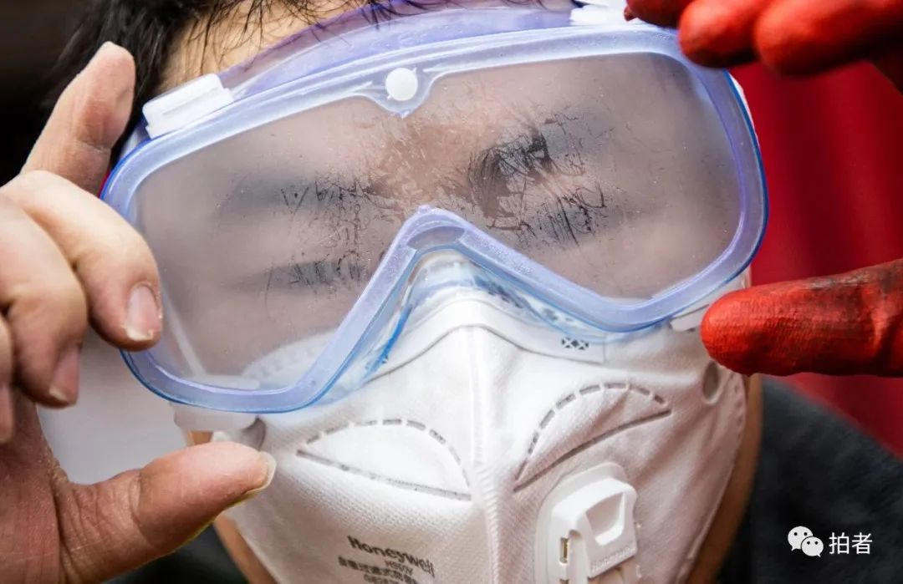
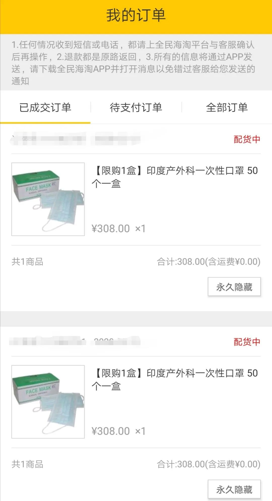
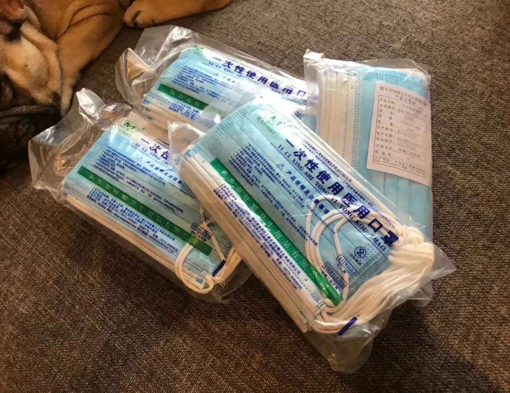
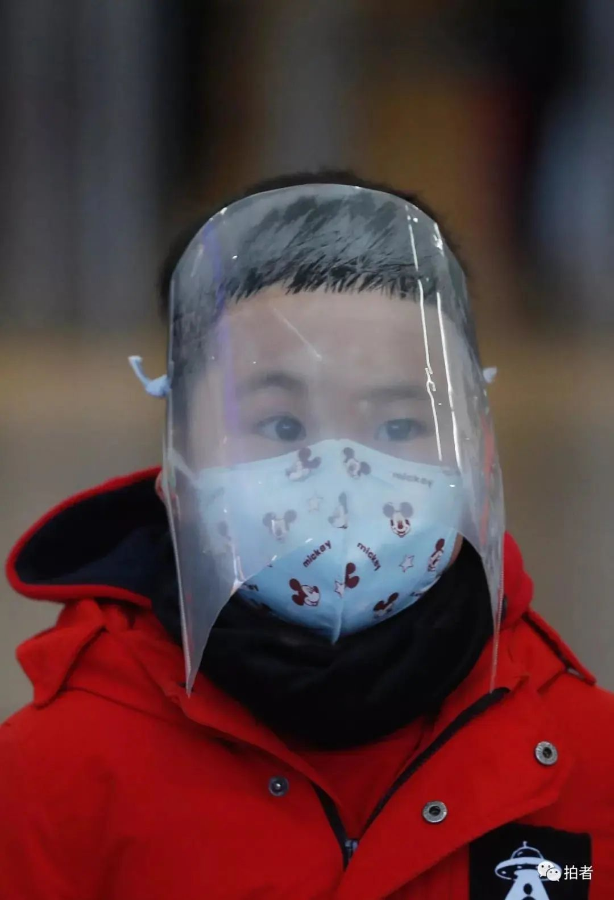

谁也想不到，这个春节最该储备的年货是口罩 ｜ 三明治
原文链接 备份链接 作者：芳野行脚 坐标：四川 职业：媒体人 1 上午，我用稀释过的84消毒液，将戴了两天的一次性医用防护口罩里外喷了一遍，晾在通风处，下午出门上班还可以对付着用用。顺便把马桶、地漏、外衣、门把手也喷了一遍，连外出穿的鞋的 …
***** *****
*****
*****“现在除了医院、药店买不着口罩，剩下的都在卖口罩。”蒋坤说，在卖方市场里，“有口罩的就是‘爷爷’”。“有人一天给我打5个电话，他得求着我。他就算挂了电话骂我，但是打电话的时候他得毕恭毕敬了。不然我不高兴，多少钱都不卖给他。”*****

1月31日，一名佩戴了口罩和护目镜的物流人员。图/新京报拍者
文 | 新京报记者 李桂 韩沁珂
编辑｜滑璇 校对 | 李世辉
►本文约5680字，阅读全文约需11分钟
2月14日，有网友在微信上找到李野，想用口罩当文身订金。
李野是成都一家文身工作室的老板，2月初以来一直试图通过各种渠道购买口罩，但收效甚微。“最近看你找口罩如此艰辛，我就说给你寄点口罩来当订金。”网友说，他给李野发来一个定位，显示自己正在韩国。
收到网友寄来的50个韩国KF94口罩后，李野很开心，把这件事当成段子分享到了朋友圈：“没想到我们成了国内第一家用口罩抵订金的文身工作室。”
新冠肺炎疫情发生以来，多家媒体报道称，戴口罩是阻断呼吸道分泌物传播的有效手段，医用外科口罩和对非油性颗粒的过滤效果大于等于95%的口罩能很好地预防呼吸道疾病。为此，口罩成了最畅销的防疫物资之一，全网脱销，一“罩”难求。
由于许多专家建议，如非必要，居民应尽量少出门或不出门，这样才能最大程度的降低病毒传染。不出门如何买到口罩？网购成了大多数人的选择。
买口罩太难了
* *
*
在四川姑娘林龄的印象里，口罩限购是从1月20日开始的。
此前的1月18日，她还在自家附近的药店里买了两包共20个一次性医用口罩，只要10块钱。但两天后，国家卫健委高级别专家组组长钟南山公开表示新冠肺炎“人传人”，当天晚上，林龄发现某网店的一次性医用口罩开始限购了：每名用户限购2包共40个。
接下来的一段时间，想要网购口罩越来越难：不少电商卖家对口罩进行了下架处理；有的电商平台，口罩的发货日期已延迟至一两个月之后；少量有现货的平台，则对消费者购买行为做出种种限制。
比如在某零售商手机APP中，口罩先是与价值199元的食材套餐捆绑销售，解绑后又推出限量抢购活动：凭借身份证号，每人每天限购3个口罩。在某电商平台，买口罩要先在指定时间预约抢购资格，预约成功后再在另一指定时间参与抢购，每天限量1万个。在另一电商平台，同一用户ID每5天限购1份口罩，数量不定，但不少消费者吐槽“抢购永远都是秒没”。
林龄在不同网店陆续下了几单，“加起来有几百个口罩”。但截至2月14日，除了1月20日当晚买到的40个口罩外，她再没收到其他口罩。一名售卖N95口罩的商家因虚假销售口罩被平台关店，系统为林龄退了钱。一名商家称工厂被征用了，让她申请退款。
在北京工作的王庄庄参与过多次口罩抢购。2月12日晚，她听朋友说某海淘平台会放出一批来自印度的一次性医用口罩，放货时间为当晚9点半。
王庄庄分析，彼时许多城市白领还困在县城或农村老家，手边没有电脑，只能用手机购物。为避开流量冲突，王庄庄另辟蹊径选择了网页抢购，竟然买到了2包共100个口罩。事后她才知道，因为访问量过大，原定9点半的抢购延迟了，但因为某种系统漏洞，她在网页上抢购成功。
王庄庄的经验，来自于屡败屡战的教训。那次成功前，她已在5个购物平台下单够买了370个口罩，如果不算退款的话，已花费近3000元。但截至2月18日，她一个口罩都没收到。

1月30日，王庄庄在韩国某购物网站买了20个N95口罩。受访者供图

王庄庄在海淘网站上抢购的口罩，至今尚未发货。受访者供图
自1月下旬起，浙江嘉兴姑娘李丹也加入了买口罩的行列。
通过网络代购，她先后从日本、韩国买到了120个一次性医用口罩、60个KF94口罩。她以为自己不会缺口罩了，就把这些口罩捐给了县城医院、分给了亲戚朋友。可当她再次寻找代购时发现，日本、韩国已经买不到了。
2月10日左右，李丹联系上了远在葡萄牙的朋友。朋友说，葡萄牙的口罩已经开始缺货，价格明显上涨。“以前一盒卖4欧（约30元），现在要12.5欧（约95元），涨了三倍。”
为啥人人抢口罩？
**
李丹承认，自己不停买口罩是因为“怕死”。作为已知的隔绝病毒的有效措施，口罩是李丹获得安全感的重要方式之一：不得不和陌生人接触的时候，戴上口罩，事情似乎变得可控了。
无法避免与陌生人接触，同样令林龄恐慌。
疫情引起广泛关注时，林龄已回到南充老家，县城也出现了确诊病例。她看了大量与口罩相关的科普文章，知道在众多品类的口罩中，N95系列防护效果最好，医用外科口罩次之，一次性医用口罩更差。
她甚至可以肉眼辨识路人口罩的真伪。偶尔出门买菜时，她会仔细观察那些挂在陌生人脸上的口罩——年轻人的口罩大都质量较好，甚至会出现难买的N95或者3M的KN95系列；但一些老年人的口罩质量很差，薄薄的一层，透光，“鼻子都能看到”；还有人戴的甚至不是一次性医用口罩，只是对病毒几乎没有过滤作用的布口罩或海绵口罩。

北京市朝阳区民政局婚姻登记处，领完结婚证隔着口罩接吻的新人。图/新京报拍者
从目前的情况看，口罩几乎全国缺货。
2月19日，在国务院联防联控机制召开新闻发布会上，国家发展改革委运行局二级巡视员唐社民表示，近几日口罩产能的利用率一直在100%以上，2月17日达到110%。此前，中国纺织品商业协会安全健康防护用品委员会会长雷利民在接受媒体采访时表示，截至2月底，预计每天能生产各类口罩1.8亿个。
但按照界面新闻的测算，各行业一旦复工，需求端的激增远远超过口罩产能的增长。按照第四次全国经济普查数据，国内法人单位和个体经营户合计就业人口高达5.33亿人，按每人每天一个的用量口罩计算，每天至少需要5.33亿个口罩。
换言之，当每天5.33亿的口罩需求遇到不到2亿的产能，每天的口罩缺口超过3亿。
按照放假前的公司安排，2月3日起，林龄将要回到成都上班。1月30日，林龄接到了公司的通知：线下复工延后，具体时间待定。
林龄从焦虑中冷静下来，开始寻找起口罩的替代品，防溢乳垫因此进入她的视线。那本是哺乳期女性防止渗乳的用品，滤芯材料跟口罩差不多，因此被许多微商打上了“口罩垫片”的标签。

林龄购买的防溢乳垫。 受访者供图
针对此事，医疗健康领域自媒体“丁香医生”2月18日表示，防溢乳垫只能防止液体渗透，无法确保有效过滤细菌或病毒，“（用防溢乳垫自制口罩）约等于‘裸奔’。”
但林龄认为“约等于裸奔”总比“裸奔”好，“约等于裸奔还是可以出门的。”她选择了众多哺乳期女性推荐的款式，透气性很好，先后买了400片。如果复工前还没买到足够的口罩，她会把这些乳垫放进口罩里，每3小时更换一次。这样，口罩就可以重复使用。
公司采购与个人买家狭路相逢
**
江宇在某医疗器械公司从事采购工作，为了筹备复工，需要购买大量口罩。因为公司需求不断增长，他很难确定多少口罩才算足够。
依据国家卫健委2月5日公布的《预防新型冠状病毒感染口罩选择与使用技术指引》（下称《口罩指南》），江宇公司下属的工厂属于人员密集区，推荐使用一次性医用口罩。“公司希望按照国家分级防护的规定来，不用过度防护。但各部门的领导都觉得，我要保护好自己的员工，还是希望买到防护等级更高的口罩。”江宇说。
然而不同防护等级的口罩，对应着不同的采购难度。依据江宇的观察，国内已经很难买到N95或者KN95系列的口罩了，只能寄希望于美国和英国的同事。“国内的话，现在的重点是让大家去买一次性医用口罩。”江宇说。
作为公司采购，质量是江宇最在意的问题之一。按照正常流程，他会要求供应方提供产品的品牌名称、检验报告、厂商的《医疗器械生产许可证》以及样品，并到工厂实地考察。但现在买口罩实在太难了，面对严苛的标准流程，他只好一步步后退。
一次，有人给江宇提供了一批口罩，并按照江宇的要求附上了口罩照片、营业执照和检验报告。但江宇发现，几份材料间没什么关系，“口罩是A品牌的，营业执照是B品牌的，检验报告是C品牌的。”江宇说，这种情况下自己会追问细节，但对方往往会说 “我只有这些”或者直接不再回复。
江宇还从韩国购买过2000个KF94口罩。KF94是韩国的防护口罩防护级别，即对直径0.4微米的颗粒物滤过率大于94%。“说实话，我们对韩国KF94的标准已经放松很多了。因为他发过来的证书我们看不懂，即便看懂了，也不知道它能不能和我拿到的口罩对上。”江宇说，他只能寄希望于这些韩国口罩是通过海关正规进口的，“因为海关至少可以保证你的东西不是三无产品。”
采购过程中，江宇逐渐发现供应商无法满足公司需求，转而开始向微商、代购等游离于主流市场之外的口罩售卖者求助。正常情况下，这些散兵游勇式的卖家对应的是个人消费者，而非成规模采购的公司。但这一次，在新冠肺炎疫情下，公司采购与个人买家狭路相逢。
“从买方的角度来说，我们没什么优势。”江宇说，和公司相比，个人购买者决策更迅速，对价格的容忍度也更高。比如一个口罩30元，公司买1万个就是30万，是一大笔钱。“但如果是个人买，咬咬牙买10个也才300块钱，无所谓。”
良莠不齐的卖方市场
**
与口罩脱销相伴的，是一批又一批出现在微信朋友圈、在各个二手交易平台的口罩经销商。
自由职业者蒋坤是2月初加入这个行列的。当时他帮朋友在药店买消毒液，却发现想买口罩的人更多，可药店里根本没口罩。蒋坤在医疗行业有些人脉，可以找到货源，此后便在朋友圈里倒腾起了口罩。
“我拿到口罩后，每个加价5毛钱卖出去，有人觉得贵，不买；但我加价3块钱再卖，这口罩依然可以卖出去。因为始终有人要口罩。”蒋坤说。
刘明也从2月初开始卖口罩的。他挂出过一款自称是N95的蓝色口罩，单价29元。图片里，几十个口罩被装在同一个透明塑料袋里，没有单独包装。这些口罩据说是“一个哥们从老家带过来的”，没有具体生产厂家，一天后，100多个口罩卖得只剩20多个了。
刘明属于那种什么火就卖什么的人，排队、代购、跑腿的业务都能接。2019年夏天球鞋市场最热时，他经常到北京三里屯帮人排队买鞋。到了2019年冬天，他的朋友圈里都是口罩、酒精、洗手液。
来自越南的翻译金敏、做外贸生意的张俊，也都做起了口罩生意。金敏的口罩以KF94为主，从昆明发货，单价30元；张俊称自己卖的一次性口罩产自印度，需要从印度经马来西亚发往自己所在的广西，之后再发往全国各地。

某电商网站上，购买口罩需要先预约、再抢购。超过200万人预约抢购限量发售的1万件口罩。网页截图
“现在除了医院、药店买不着口罩，剩下的都在卖口罩。”蒋坤说，在卖方市场里，“有口罩的就是‘爷爷’。”
“有人一天给我打5个电话，他得求着我。他就算挂了电话骂我，但是打电话的时候他得毕恭毕敬了。不然我不高兴，多少钱都不卖给他。”蒋坤说即便如此，他每天一睁眼想的就是口罩，找上门的买家“停都停不下来”。
江宇也有过类似感受。他发现曾经没什么话语权的供应商，因为手里有了口罩，心态变了。他记得某家供应商的产品少，很抢手，电话沟通时销售人员“抑制不住自己的喜悦”。“他跟我说，不好意思，我太兴奋了，我感觉我原来一直当孙子，现在终于能够硬气一点了。”
五花八门的线上交易
******
在口罩市场中，买家和卖家是相对的，身为卖家的蒋坤也要从其他人手上买口罩。在这个过程中，蒋坤变得被动，一不留神就可能着了别人的道。
一次，蒋坤找人订了1万个N95口罩，现货，总价20万元。但等了10天卖家都没发货，口罩单价也从20元涨到了25元。“这个时候，他怎么可能再以20万的价格卖给我这1万个口罩？”蒋坤说，最终对方全额退款。
蒋坤怀疑，对方拿着自己的货款做起了“无本万利”的买卖：用买家A交来的货款低价购入一批口罩，再以高价卖给买家B，赚钱后给卖家A全额退款。
为了买口罩，李野还遭遇过不少骗局。
2月初，李野从微商手里订购了40个口罩，算上邮费，总共128元。但交过钱后，微商不回消息、不接电话、不发货，李野觉得居然有人为了一百多块钱骗人，有点不能理解。
没过两天，有人自称可以提供500个一次性医用口罩，单价5元。有了之前的教训，李野表示自己要带着现金面对面验货、提货，“如果东西没问题，我当场就把钱给了。”
那条信息发过去，对方便开始用各种理由推脱，还说要看货得先交订金。就在李野准备转账时，微信弹出了“本次交易存在欺诈风险……暂时无法完成”的提示，对方解释称之前有人故意找茬，把自己举报了，暂时无法收款。但第二天再次转钱时，对方依然账号异常，李野急了，要马上开车过去提货，但对方依然拒绝。大约两小时后，卖家称口罩已经卖给别人了。
“这人是把我当成傻白甜了吗？”李野很生气。

李野买了4包一次性医用口罩，花了400元。受访者供图
李野还遇到过一个卖家，表示可以提供1000个一次性医用口罩，但要交订金。李野提出，交订金可以，但必须通过闲鱼等第三方平台交易。对方就此消失，再也没有回过消息。
除了良莠不齐的卖家，口罩价格也是一天一变，甚至每小时都在变化。
1月22日，李丹和朋友在上海某厂商处订购了300个N95口罩，单价7元。第二天他们开车到上海取完货之后，厂家就把口罩的单价调到了15元。
江宇也经历过类似的事。一次，他和人拼购了100个一次性医用口罩，单价5.6元。可一小时后，主导拼单的人说口罩被人以7元的单价“截和了”。“真是瞬间即没啊！”江宇说。
从那以后，无论卖家报出什么样的价格，江宇都会应下来。“每一个都说‘行，都要’，因为一旦放手了，你就不知道它还能不能回来。而且你今天觉得贵，说不定明天就觉得便宜了，因为更便宜的那个已经没货了。”
在蒋坤看来，口罩价格飞涨的原因之一是销售过程中层层转手，层层加价。
蒋坤记得，一名买家因为种种原因要为口罩申请退货。蒋坤同意了，让对方把寄回的快递单号发过来，对方却说自己把口罩转手了，单号在下家那里，要等一等。
轮到蒋坤退款时，他同样要拖延时间。因为蒋坤的口罩也是从朋友那里拿的，要等朋友先把钱退给自己，自己才能退给买家。但朋友却迟迟不肯退钱，因为朋友在等着自己的上家先退款。
“光是这一单，至少就经手了5个人。”蒋坤说，至于转手中途每个人加价多少，就看个人的想法了。

2月1日，北京西站东北2号出站口，有家长用文件袋为小朋友制作了简易面罩。摄影/新京报记者 侯少卿
不过随着春节假期结束，越来越多的企业加入了生产口罩的行列，口罩产能也在逐步增加。“天眼查”数据显示，截至2月7日，全国已有超过3000家企业在经营范围中新增了“口罩、消毒液、防护服、测温仪、医疗器械”等业务。
比如富士康宣布，其深圳龙华园区首次引入医用口罩生产线，并于2月5日试产，可日产10万个口罩。比亚迪也表示，正调配资源着手防护物资生产设备的设计和制造，预计在2月17日前后量产出货口罩和消毒液，到2月底口罩产能可达500万只/天。
（文中林龄、王庄庄、李丹、江宇、蒋坤、金敏、张俊、李野为化名）
*洋葱话题*
*▼*
*****你买到口罩了吗？*****
*后台回复关键词*****“洋葱君” ，加入读者群****
***推荐阅读***


十堰“战时管制”：五十名志愿者与五千名居民的自助生活

*********既然在看，就点一下吧****** *********
*********
原文链接 备份链接 作者：芳野行脚 坐标：四川 职业：媒体人 1 上午，我用稀释过的84消毒液，将戴了两天的一次性医用防护口罩里外喷了一遍，晾在通风处，下午出门上班还可以对付着用用。顺便把马桶、地漏、外衣、门把手也喷了一遍，连外出穿的鞋的 …
原文链接 备份链接 👆本号引起极度舒适，建议星标一下 口罩转产背后的中国制造业 作者 | 罗立璇 设计 | 范晓雯 对于口罩的渴望迅速扩散到了大江南北。疫情影响下，口罩已经成为了生活必需品。尽管大部分民众已经尽量减少出门的频率，但只要需要 …
原文链接 备份链接 从搜集到运输，每一个关卡都会出现意想不到的困难。经历了被提价、被毁约、被骗等种种意外之后，海外华人机智地趟出了自己的线路。但情况瞬息万变。仍然有一些海外物资，因为各种各样的原因，还在赶往武汉的路上，不知何时抵达。 …
原文链接 备份链接 封面报道之产业篇： 荆门：消毒剂企业难复工 | 神农架：10名患者现林区 | 十堰：“东风城”亟待开工 1月3日新冠肺炎确诊患者44例的时候，湖北仙桃市口罩厂的老板李力总觉得会有事发生。此前，他已经在网上看到非典在武汉 …
原文链接 备份链接 疫情防控“全国一盘棋”的关键时刻，各地政府应该在用工、原材料、物流等环节最大程度地给口罩企业提供支持，绝对不能画地为牢。 2月11日，工作人员在位于重庆市南岸区的宏冠医疗设备有限公司口罩生产包装车间内作业。作者：王全 …